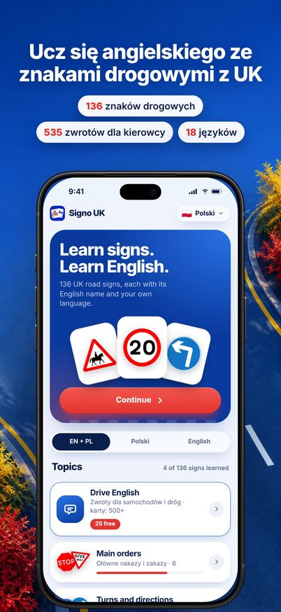
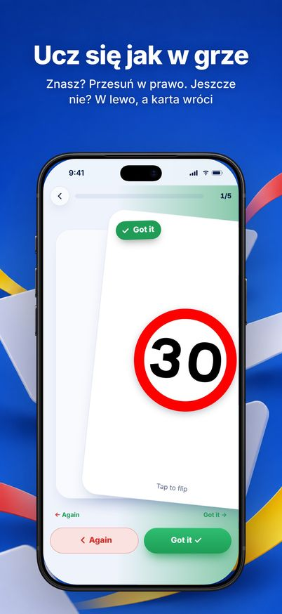
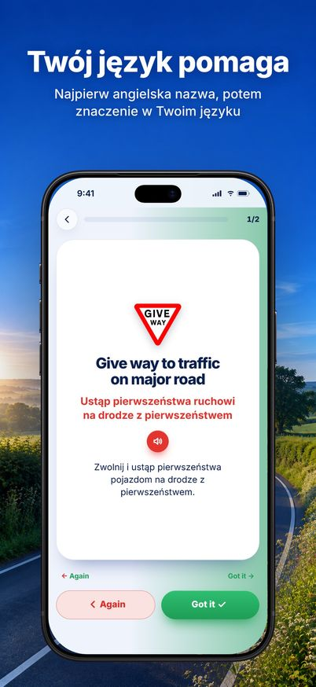
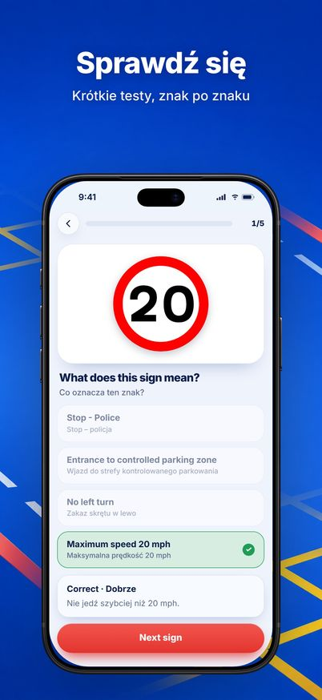
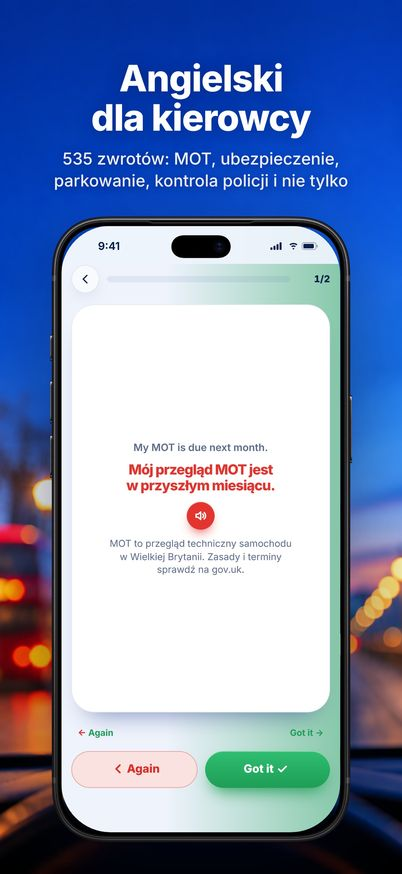
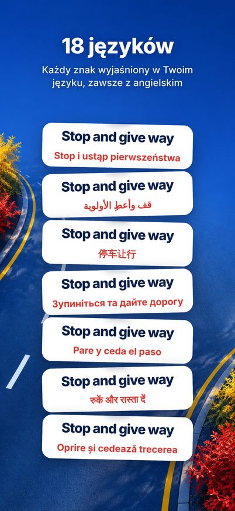
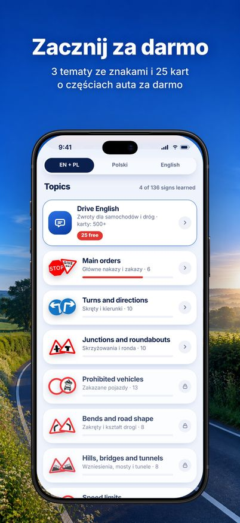
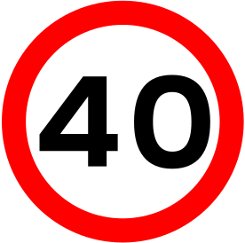
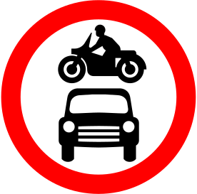
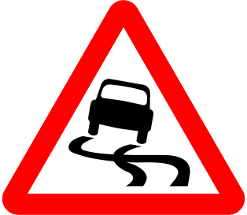

Znaki drogowe w Wielkiej Brytanii po polsku
Co oznacza każdy znak i jak nazywa się po angielsku. Signo to aplikacja na iPhone'a: 136 znaków i 535 zwrotów do jazdy w Wielkiej Brytanii, z objaśnieniem po polsku.
Pobierz z App StoreZa darmo: 3 działy znaków i 25 słów o częściach samochodu. Signo Pro odblokowuje wszystko.


Ucz się jak w grze
Znasz znak — przesuń w prawo, nie — w lewo, a wróci. Angielska nazwa czytana brytyjskim głosem, po lekcji krótki test.







Popularne znaki i ich znaczenie
Kliknij znak, aby zobaczyć objaśnienie.
- Stop i ustąp pierwszeństwaStop and give way
 Ustąp pierwszeństwa ruchowi na drodze z pierwszeństwemGive way to traffic on major road
Ustąp pierwszeństwa ruchowi na drodze z pierwszeństwemGive way to traffic on major road Zakaz wjazdu pojazdówNo entry for vehicular traffic
Zakaz wjazdu pojazdówNo entry for vehicular traffic Obowiązuje krajowy limit prędkościNational speed limit applies
Obowiązuje krajowy limit prędkościNational speed limit applies- Maksymalna prędkość 30 mphMaximum speed 30 mph
 Maksymalna prędkość 20 mphMaximum speed 20 mph
Maksymalna prędkość 20 mphMaximum speed 20 mph
Maksymalna prędkość 40 mphMaximum speed 40 mph Maksymalna prędkość 50 mphMaximum speed 50 mph
Maksymalna prędkość 50 mphMaximum speed 50 mph Maksymalna prędkość 60 mphMaximum speed 60 mph
Maksymalna prędkość 60 mphMaximum speed 60 mph Wjazd do strefy 20 mphEntry to 20 mph zone
Wjazd do strefy 20 mphEntry to 20 mph zone Zakaz wyprzedzaniaNo overtaking
Zakaz wyprzedzaniaNo overtaking Zakaz skrętu w prawoNo right turn
Zakaz skrętu w prawoNo right turn Zakaz skrętu w lewoNo left turn
Zakaz skrętu w lewoNo left turn Zakaz zawracaniaNo U-turns
Zakaz zawracaniaNo U-turns Trzymaj się lewej stronyKeep left
Trzymaj się lewej stronyKeep left Mini rondoMini-roundabout
Mini rondoMini-roundabout- Rondo z przoduRoundabout ahead
 Zakaz ruchu wszystkich pojazdówAll vehicles prohibited
Zakaz ruchu wszystkich pojazdówAll vehicles prohibited
Zakaz wjazdu pojazdów silnikowychNo motor vehicles Zakaz zatrzymywania się na jezdni głównejNo stopping on main carriageway
Zakaz zatrzymywania się na jezdni głównejNo stopping on main carriageway Trasa wyłącznie dla autobusów, rowerów i taksówekRoute for use by buses, pedal cycles and taxis only
Trasa wyłącznie dla autobusów, rowerów i taksówekRoute for use by buses, pedal cycles and taxis only Wjazd do strefy kontrolowanego parkowaniaEntrance to controlled parking zone
Wjazd do strefy kontrolowanego parkowaniaEntrance to controlled parking zone Tylko dla posiadaczy zezwoleniaPermit holders only
Tylko dla posiadaczy zezwoleniaPermit holders only Tylko dla posiadaczy karty parkingowej osoby niepełnosprawnejDisabled badge holders only
Tylko dla posiadaczy karty parkingowej osoby niepełnosprawnejDisabled badge holders only Miejsce parkingoweParking place
Miejsce parkingoweParking place FotoradarySpeed cameras
FotoradarySpeed cameras Stop – policjaStop - Police
Stop – policjaStop - Police Punkt, od którego obowiązują przepisy dotyczące autostradPoint at which motorway regulations start to apply
Punkt, od którego obowiązują przepisy dotyczące autostradPoint at which motorway regulations start to apply Sygnalizacja świetlna z przoduTraffic signals ahead
Sygnalizacja świetlna z przoduTraffic signals ahead Przejście dla pieszych (zebra)Zebra crossing
Przejście dla pieszych (zebra)Zebra crossing Dzieci idące do szkoły lub na plac zabaw lub z nich z przoduChildren going to or from school or playground ahead
Dzieci idące do szkoły lub na plac zabaw lub z nich z przoduChildren going to or from school or playground ahead Roboty drogoweRoad works
Roboty drogoweRoad works
Śliska drogaSlippery road Przejazd kolejowy z zaporą lub szlabanem z przoduLevel crossing with gate or barrier ahead
Przejazd kolejowy z zaporą lub szlabanem z przoduLevel crossing with gate or barrier ahead Przejazd kolejowy bez bramy lub szlabanu z przoduRailway level crossing without gate or barrier ahead
Przejazd kolejowy bez bramy lub szlabanu z przoduRailway level crossing without gate or barrier ahead Ustąp pierwszeństwa pojazdom nadjeżdżającym z przeciwkaGive priority to vehicles from opposite direction
Ustąp pierwszeństwa pojazdom nadjeżdżającym z przeciwkaGive priority to vehicles from opposite direction Pierwszeństwo przed pojazdami nadjeżdżającymi z przeciwkaTraffic has priority over oncoming vehicles
Pierwszeństwo przed pojazdami nadjeżdżającymi z przeciwkaTraffic has priority over oncoming vehicles Zakaz wjazdu pojazdów wyższych niż podana wysokośćNo vehicles over height shown
Zakaz wjazdu pojazdów wyższych niż podana wysokośćNo vehicles over height shown Skrzyżowanie w kształcie litery T z przoduT-junction ahead
Skrzyżowanie w kształcie litery T z przoduT-junction ahead Skrzyżowanie dróg z przoduCrossroads ahead
Skrzyżowanie dróg z przoduCrossroads ahead Droga jednopasmowaSingle track road
Droga jednopasmowaSingle track road MijankaPassing place
MijankaPassing place
Części samochodu po angielsku
25 słów z darmowego działu Drive English. Kliknij słowo, aby je usłyszeć.
Wszystkie 136 znaków w aplikacji
Za darmo: 3 działy znaków i 25 słów o częściach samochodu. Signo Pro odblokowuje wszystko.